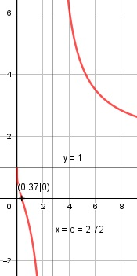

Aufgabe 165 ln (x) + 1 f(x) = --------------- ln (x) - 1 f(x) = (ln (x) + 1) * (ln (x) - 1)-1 Produktregel erste Ableitung: 1 u = ln (x) + 1, u' = --- x v = (ln (x) - 1)-1 Kettenregel: 1 * (ln (x) - 1)-2 v' = - -------------------- x 1 f'(x) = --- * (ln (x) - 1)-1 + x (ln (x) - 1)-2 + (- ----------------) * (ln (x) + 1) x 1 ln (x) + 1 f'(x) = ------------------ - ---------------- x * (ln (x) - 1) (ln (x) - 1)2 ln (x) - 1 - ln (x) - 1 f'(x) = ------------------------- x * (ln x - 1)2 2 f'(x) = - ------------------- x * (ln (x) - 1)2 2 * (ln (x) - 1)-2 f'(x) = - -------------------- x Quotientenregel zweite Ableitung: -2 u = -2 * (ln (x) - 1)-2 = -------------- (ln (x) - 1)2 Kettenregel: -2 * (-2) * (ln (x) - 1)-3 u' = ---------------------------- x 4 u' = ------------------- x * (ln (x) - 1)3 v = x, v' = 1 4 -2 -----------------*x - 1*-------------- x*(ln (x) - 1)3 (ln (x) - 1)2 f''(x) = ---------------------------------------- x2 4 + 2 * (ln (x) - 1) f''(x) = ----------------------- x2 * (ln (x) - 1)3 2 * ln (x) + 2 f''(x) = -------------------- x2 * (ln (x) - 1)3 Zur Beurteilung, ob f'''(x) ≠ 0: (Begründung siehe Aufgabe 105) 2 u = 2 * ln (x) + 2, u' = --- x u' 2 f'''(x) = --- = -------------------- v x3 * (ln (x) - 1)3 ≠ 0 für alle x > 0 Wegen ln x, muss x > 0 sein Definitionsbereich: 0 < x < ∞ und x ≠ e Waagerechte Asymptote: 2 ln (x) + 1 : ln (x) - 1 = 1 + ------------ -(ln (x) – 1) ln (x) - 1 -------------- 2 2 1 + ------------- geht gegen 1 für x --> ∞ ln (x) – 1 Polstelle: ln (x) – 1 = 0 |+1 ln x = 1 --> x = e1 = e Für x --> e geht f(x) --> ± ∞ Wertebereich: -∞ < f(x) < ∞ und f(x) ≠ 1 Symmetrie zur y-Achse bzw. zum Punkt (0|0): ln (-x) + 1 f(-x) = -------------- ≠ f(x) ln (-x) – 1 --> keine Achsensymmetrie -(ln (-x) + 1) -f(-x) = ---------------- ≠ f(x) ln (-x) – 1 --> keine Punktsymmetrie Nullstellen: f(x) = 0 ln (x) + 1 ------------ = 0 |*(ln (x) - 1) ln (x) - 1 ln (x) + 1 = 0 |-1 ln x = -1 x = e-1 = 0,37 N(0,37|0) Schnittpunkt mit der y-Achse: x = 0 x = 0 liegt nicht im Definitionsbereich --> kein Schnittpunkt Extrempunkte: f'(x) = 0 2 - ------------------ = 0 |*x * (ln (x) - 1)2 x * (ln (x) - 1)2 -2 = 0 Widerspruch --> keine Extrempunkte Wendepunkte: f''(x) = 0 4 ----------------- = 0 |*x2 * (ln x - 1)3 x2 * (ln x - 1)3 4 = 0 Widerspruch --> keine Wendepunkte Graph:
